Step 1: Setup of the Silicon model system¶
The first task in this tutorial is to build the model system we will use for both the classical and QM/MM simulations. We will use an approximately 2D model system in the thin strip geometry
1.1 Building the bulk unit cell (30 minutes)¶
Import the relevant modules and functions¶
We start by importing all the functions we will need. Create a new
script named make_crack.py and add the following lines:
from ase.structure import bulk
from ase.lattice.cubic import Diamond
from ase.constraints import FixAtoms
import ase.units as units
from quippy import set_fortran_indexing
from quippy.potential import Potential, Minim
from quippy.elasticity import youngs_modulus, poisson_ratio
from quippy.io import write
from quippy.crack import (print_crack_system,
G_to_strain,
thin_strip_displacement_y,
find_crack_tip_stress_field)
Note that some routines come from ASE and others from quippy. We will use ASE for basic atomic manipulations, and quippy to provide the interatomic potentials plus some special purpose functionality.
Note
For interactive use, it is convenient to import everything from the
entire quippy package with from qlab import * as described
in the Practical considerations section. We chose not to do that in these scripts to
make it clear where each function we are using is defined, and to make it easier
to look them up in the online documentation.
Definition of the simulation parameters¶
Let’s first define the parameters needed to construct our model system. There are three possible crack systems. For now, we will use the first (uncommented) one, 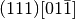, which means a crack propagating on the 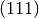 cleavage plane (the lowest surface energy of all silicon surfaces) with the crack front along the 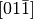 direction:
# System 1. (111)[0-11]
crack_direction = (-2, 1, 1) # Miller index of x-axis
cleavage_plane = (1, 1, 1) # Miller index of y-axis
crack_front = (0, 1, -1) # Miller index of z-axis
# # System 2. (110)[001]
# crack_direction = (1,-1,0)
# cleavage_plane = (1,1,0)
# crack_front = (0,0,1)
# # System 3. (110)[1-10]
# crack_direction = (0,0,-1)
# cleavage_plane = (1,1,0)
# crack_front = (1,-1,0)
If you have time later, you can come back to this point and change to one of the other fracture systems. Next we need various geometric parameters:
width = 200.0*units.Ang # Width of crack slab
height = 100.0*units.Ang # Height of crack slab
vacuum = 100.0*units.Ang # Amount of vacuum around slab
crack_seed_length = 40.0*units.Ang # Length of seed crack
strain_ramp_length = 30.0*units.Ang # Distance over which strain is ramped up
initial_G = 5.0*(units.J/units.m**2) # Initial energy flow to crack tip
Note the explicit unit conversion: some of this is unnecessary as we
are using the ase.units module where Ang = eV =
1. The energy release rate initial_G is given in the
widely used units of J/m2.
Next we define some parameters related to the classical interatomic potential:
relax_fmax = 0.025*units.eV/units.Ang # Maximum force criteria
param_file = 'params.xml' # XML file containing
# interatomic potential parameters
mm_init_args = 'IP SW' # Initialisation arguments
# for the classical potential
And finally the output file:
output_file = 'crack.xyz' # File to which structure will be written
You should download the params.xml file, which contains
the parameters for the SW potential (and also for DFTB, needed for
Step 3: LOTF hybrid MD simulation of fracture in Si)
Finding the equilibrium lattice constant for Si¶
To find the Si equilibrium lattice constant a0 with the SW potential,
let’s first build the 8-atom diamond cubic cell for silicon, with an initial
guess at lattice constant of 5.44 A. This can be done using the
bulk() function from the ase.structure module:
si_bulk = ... # Build the 8-atom diamond cubic cell for Si
The variable si_bulk is an Atoms object. It
has various attributes and methods that will be introduced as necessary
during this tutorial.
Once you have created your si_bulk object, run the make_crack.py
script from within ipython with the run command. Providing you
have imported everything from the qlab module, will then be
able to interactively visualise the Si unit cell with the
view() function from the qlab module, which you
should type in at the ipython prompt:
In [5]: view(si_bulk)
{kind=link}
This will pop up an AtomEye [Li2003] window showing the 8-atom
silicon cell, with the unit cell boundary drawn with a thick black
line. You can rotate the system with the left mouse button, translate
by holding Control and tracking, or translate within the periodic
boundaries by holding Shift and dragging. Zoom in and out by
dragging with the right mouse button (or scroll wheel, if you have
one). Press b to toggle the display of bonds. For more help on
AtomEye see its web page or the documentation
for the qlab and atomeye modules.
Now, we initialise the Stillinger-Weber (SW) classical interatomic
potential using quippy’s Potential class
mm_pot = Potential('IP SW', param_filename='params.xml')
The equilibrium lattice constant a0 can now be found by minimising the
cell degrees of freedom with respect to the virial tensor calculated by the
SW potential. First, we need to attach a calculator (i.e. the SW
potential, mm_pot we just created) to the si_bulk object,
using the method set_calculator():
si_bulk. ... # Attach the SW potential to si_bulk
This means that subsequent requests to calculate energy or forces of si_bulk will be performed using our SW potential.
The minimisation can now be carried out by making a
Minim class from the si_bulk Atoms,
requesting that both atomic positions and cell degrees of freedom
should be relaxed. Then run the minimisation until the maximum force
is below fmax=1e-2, using the run()
method
minim = ... # Initialise the minimiser from si_bulk
print('Minimising bulk unit cell')
minim. ... # Run the minimisation
The lattice constant a0 can be easily obtained from the relaxed
lattice vectors using the cell() attribute of
the si_bulk object, which returns a  matrix
containing the lattice vectors as rows in Cartesian coordinates,
i.e.
matrix
containing the lattice vectors as rows in Cartesian coordinates,
i.e. si_bulk.cell[0,0] is the x coordinate of the first lattice
vector.
a0 = ... # Get the lattice constant
print('Lattice constant %.3f A\n' % a0)
As a check, you should find a value for a0 of around 5.431 A.
Once you have obtained a0, you should replace the si_bulk object with a new bulk cell using this lattice constant, so that the off-diagonal components of the lattice are exactly zero:
si_bulk = ... # Make a new 8-atom bulk cell with correct a0
si_bulk. ... # re-attach the SW potential as a calculator
Milestone 1.1¶
At this point your script should look something like make_crack_1.py.
1.2 Calculation of elastic and surface properties of silicon (30 minutes)¶
Calculation of the Young’s modulus and the Poisson ratio¶
Following the discussion above section, we need to
calculate some elastic properties of our model silicon. To calculate the Young’s
modulus E along the direction perpendicular to the cleavage plane, and the
Poisson ratio  in the 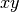 plane, we need the 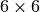 matrix of the elastic constants 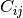. This matrix c can be
calculated using the
in the 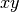 plane, we need the 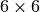 matrix of the elastic constants 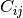. This matrix c can be
calculated using the get_elastic_constants()
method of the mm_pot Potential object.
c = mm_pot. ... # Get the 6x6 C_ij matrix
print('Elastic constants (GPa):')
print((c / units.GPa).round(0))
print('')
Here, the GPa constant from the ase.units module module is used to
convert from pressure units of eV/A3 into GPa.
The Young’s modulus E and the Poisson ratio nu can now be calculated,
given c, the cleavage_plane and the crack_direction (defined in the
parameters section above), using the functions
youngs_modulus() and
poisson_ratio() from the
quippy.elasticity module.
E = ... # Get E
print('Young\'s modulus %.1f GPa' % (E / units.GPa))
nu = ... # Get nu
print('Poisson ratio % .3f\n' % nu)
As a check, for the crack system, you should get a Young’s modulus of 142.8 GPa and a Poisson ratio of 0.265.
Calculation of the surface energy of the cleavage plane¶
To calculate the surface energy per unit area gamma of the cleavage_plane, we build a Si slab unit cell aligned with the requested crystallographic orientation. The orientation of the crack system can be printed using the following command:
print_crack_system(crack_direction, cleavage_plane, crack_front)
The new unit slab can be obtained using the
ase.lattice.cubic.Diamond
from the ase.lattice module, which is used as follows:
unit_slab = Diamond(directions=[crack_direction,
cleavage_plane,
crack_front],
size=(1, 1, 1),
symbol='Si',
pbc=True,
latticeconstant=a0)
print('Unit slab with %d atoms per unit cell:' % len(unit_slab))
print(unit_slab.cell)
print('')
You can visualise the new cell with view(unit_slab) (type this at
the ipython prompt after running the script as it is so far, don’t
add it to the script file):

We now shift the unit_slab vertically so that we will open up a surface along a glide plane, cutting vertically aligned bonds (see e.g. this image). This choice gives the lowest energy surface. We then map the positions back into the unit cell:
{kind=link}
unit_slab.positions[:, 1] += (unit_slab.positions[1, 1] -
unit_slab.positions[0, 1]) / 2.0
unit_slab.set_scaled_positions(unit_slab.get_scaled_positions())
The positions is a (N,3) array containing
the Cartesian coordinates of the atoms, and
set_scaled_positions() and
get_scaled_positions() are necessary to ensure
all the atoms are mapped back inside the unit cell before we open
up a surface. This is the result of applying the shift (do another
view(unit_slab) to update your AtomEye viewer).

Note how the top and bottom layers now correspond to glide planes, so that the cell boundary now corresponds to a shuffle plane as required.
We now make a copy of the unit_slab and create a surface unit cell
with surfaces parallel to the cleavage_plane. We can use the
ase.atoms.Atoms.center() method which, besides centring the
atoms in the unit cell, allows some vacuum to be added on both sides
of the slab along a specified axis (use axis=0 for the x-axis,
or axis=1 for the y-axis, etc.). The amount of vacuum you add is
not critical, but could be taken from the vacuum parameter in the
parameters section above:
surface = unit_slab.copy()
surface. ... # Add vacuum along y axis
You should get a surface unit cell which looks something like this:

Here, the atoms have been coloured by coordination by pressing the k key. The green atoms on the surfaces are three-fold coordinated.
Now that we have both the bulk unit slab and the surface unit cell,
the surface energy gamma for the cleavage plane can be calculated
using the SW potential. Once a calculator (e.g. mm_pot) is attached
to an Atoms object, the potential energy of the
atomic system can be calculated with
get_potential_energy(). It is useful to know
that the number of atoms in an Atoms object can be obtained by the
list-method len (e.g. len(si_bulk) gives the number of atoms in
si_bulk), and that the volume of a cell can be calculated with
get_volume():
surface. ... # Attach SW potential to surface atoms
E_surf = ... # Get potential energy of surface system
E_per_atom_bulk = ... # Get potential energy per atom for bulk slab
area = ... # Calculate surface area using volume and cell
gamma = ... # Calculate surface energy
print('Surface energy of %s surface %.4f J/m^2\n' %
(cleavage_plane, gamma / (units.J / units.m ** 2)))
As a check, you should obtain 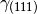 = 1.36 J/m2. You may want to verify that this result is converged
with respect to the number of layers in the system (note the cutoff
distance of the SW potential, which you can obtain with
mm_pot.cutoff(), is about 3.93 A, just beyond the second neighbour
distance).
Milestone 1.2¶
At this point your script should look something like make_crack_2.py
1.3 Setup of the crack slab supercell (30 minutes)¶
Replicating the unit cell to form a slab supercell¶
Now, we have all the ingredients needed to build the full crack slab system and to apply the requested strain field.
We start by building the full slab system. First, we need to find the number
of unit_slab cells along x and y that approximately match width and
height (see parameters section).
Note that the python function int() can be used to
convert a floating point number into an integer, truncating towards zero:
nx = ... # Find number of unit_slab cells along x
ny = ... # Find number of unit_slab cells along y
To make sure that the slab is centered on a bond along the y direction, the number of units cell in this direction, ny, must be even:
if ny % 2 == 1:
ny += 1
The crack supercell is now simply obtained by replicating unit_slab 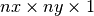 times along the three axes:
crack_slab = unit_slab * (nx, ny, 1)
As we did before for the surface system, vacuum has to be introduced along
the x and y axes (Hint: use the center()
method twice)
crack_slab. ... # Add vacuum along x
crack_slab. ... # Add vacuum along y
The crack_slab is now centered on the origin in the xy plane to make it simpler to apply strain:
crack_slab.positions[:, 0] -= crack_slab.positions[:, 0].mean()
crack_slab.positions[:, 1] -= crack_slab.positions[:, 1].mean()
and its original width and height values are saved, and will later be used to measure the strain:
orig_width = (crack_slab.positions[:, 0].max() -
crack_slab.positions[:, 0].min())
orig_height = (crack_slab.positions[:, 1].max() -
crack_slab.positions[:, 1].min())
print(('Made slab with %d atoms, original width and height: %.1f x %.1f A^2' %
(len(crack_slab), orig_width, orig_height)))
The original y coordinates of the top and bottom of the slab and the original x coordinates of the left and right surfaces are also saved:
top = crack_slab.positions[:, 1].max()
bottom = crack_slab.positions[:, 1].min()
left = crack_slab.positions[:, 0].min()
right = crack_slab.positions[:, 0].max()
At this point, your crack_slab should look something like this:

Setting constraints to fix the edge atoms¶
During the MD simulations, the positions of the top and bottom rows of atoms will be kept fixed. More precisely, these rows of atoms will only be moved rigidly when the strain is applied and will not move in response to forces from the interatomic potential (see the discussion of the thin strip geometry above). To do this, we initialise a fixed_mask array that is True for each atom whose position needs to be fixed, and False otherwise:
fixed_mask = ((abs(crack_slab.positions[:, 1] - top) < 1.0) |
(abs(crack_slab.positions[:, 1] - bottom) < 1.0))
Note that the | operator is shorthand for a logical ‘or’
operation. After re-running the latest version of your script and
executing view(crack_slab), you can colour the atoms by
fixed_mask using the aux_property_coloring() function
aux_property_coloring(fixed_mask)
which colours the atoms where fixed_mask is True in red and those where it is False in blue, like this:

Now we can use the FixAtoms class to
fix the positions of the atoms according to the mask fixed_mask, and
then attach the constraint to crack_slab using
set_constraint():
const = ... # Initialise the constraint
crack_slab. ... # Attach the constraint to crack_slab
print('Fixed %d atoms\n' % fixed_mask.sum())
To create the crack seed, we now apply the initial strain ramp. First,
we need to convert the chosen energy release rate initial_G into a
strain. This can be done using the G_to_strain()
function which implements the thin strip equation described
above. The strain is then used to displace
the y coordinate of the atomic positions according to the strain
ramp produced by the thin_strip_displacement_y()
function. Here, the crack_seed_length and the strain_ramp_length
parameters should be used. The objective is that atoms to the left of
left + crack_seed_length should be rigidly shifted vertically, and
those to the right of left + crack_seed_length +
strain_ramp_length should be uniformly strained, with a transition
region in between.
strain = ... # Convert G into strain
crack_slab.positions[:, 1] += ... # update the atoms positions along y
print('Applied initial load: strain=%.4f, G=%.2f J/m^2' %
(strain, initial_G / (units.J / units.m**2)))
This is the resulting crack slab, for the case:

Relaxation of the crack slab¶
To obtain a good starting point for the MD, we need to perform an
approximate geometry optimisation of the slab, keeping the top and
bottom rows of atoms fixed. Once again, our mm_pot needs to be
attached to crack_slab and the minimiser
Minim initialised (note that here it does
not make sense to relax the cell since we have vacuum in two
directions). We can then perform the minimisation until the maximum
force is below the relax_fmax defined in the parameters
section:
print('Relaxing slab')
crack_slab. ... # Attach the calculator to crack_slab
minim = ... # Initialise the minimiser
minim. ... # Run the minimisation until forces are relax_fmax
Here’s what your minimised crack slab should look like:

Locating the crack tip¶
Before starting the next steps, it is useful to find the initial
position of the crack tip. This is provided by the
find_crack_tip_stress_field() function:
crack_pos = find_crack_tip_stress_field(crack_slab, calc=mm_pot)
print 'Found crack tip at position %s' % crack_pos
This function works by fitting the components of the Irwin crack stress field to the per-atom stresses calculated by the classical SW potential, allowing the origin of the analytical stress field to move during the fit. Then, we simply this point to be the current crack position.
Saving the output file¶
Finally, we can save all the calculated materials properties inside the
crack_slab Atoms object, before writing it to disk:
crack_slab.info['nneightol'] = 1.30 # set nearest neighbour tolerance
crack_slab.info['LatticeConstant'] = a0
crack_slab.info['C11'] = c[0, 0]
crack_slab.info['C12'] = c[0, 1]
crack_slab.info['C44'] = c[3, 3]
crack_slab.info['YoungsModulus'] = E
crack_slab.info['PoissonRatio_yx'] = nu
crack_slab.info['SurfaceEnergy'] = gamma
crack_slab.info['OrigWidth'] = orig_width
crack_slab.info['OrigHeight'] = orig_height
crack_slab.info['CrackDirection'] = crack_direction
crack_slab.info['CleavagePlane'] = cleavage_plane
crack_slab.info['CrackFront'] = crack_front
crack_slab.info['strain'] = strain
crack_slab.info['G'] = initial_G
crack_slab.info['CrackPos'] = crack_pos
crack_slab.info['is_cracked'] = False
We can save our results, including all the extra properties and information, in Extended XYZ in the output_file, whose name is defined in the parameters section:
print('Writing crack slab to file %s' % output_file)
write(crack_slab, output_file)
Milestone 1.3¶
At this point your final script should look something like
Step 1 solution — make_crack.py, and your XYZ file like crack.xyz.
When you are ready, proceed to Step 2: Classical MD simulation of fracture in Si.